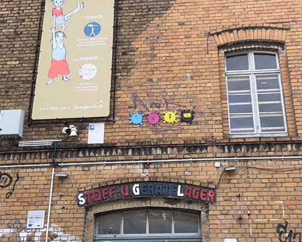

Berlin et le street art
Précédemment, je te parlais de ce que tu pouvais faire à Berlin et j’évoquais la découverte du
street art lors
d’une visite guidée. Je suis là aujourd’hui pour te partager plus de photos et certaines petites anecdotes
que je n’ai pas
pu te partager dans mon dernier post.
J’ai commencé ma visite dans la rue «revaler strasse» où j’ai pu
voir l’affiche publicitaire de Rosalia une chanteuse espagnole pour son nouvel album. Elle a créé toute une campagne de pub
en Allemagne autour du street art, avec des affiches en papier collés au mur et au sol ainsi que des tags.
J’ai continué ma visite dans une petite ruelle accessible via la rue dont je t’ai parlé. Je
suis tombée sur les œuvres de CMYK DOT, un artiste allemand qui se base sur les couleurs CMJN, les couleurs qui à elles
quatre peuvent former n’importe quelle autre couleur.

En continuant l’exploration de cette ruelle, un toucan s’est imposé à moi. Il était constitué
de vieilles pièces de voiture, de vélo ou simplement de pièces de métal trouvées dans la rue. De loin, ces pièces
disparaissaient et se transformaient en un immense oiseau en 3 dimensions.
Dans la rue «warschauer strasse», j’ai pu apercevoir un immense couteau suisse et un homme en train de
peindre sur
deux énormes murs.
J’ai fini ma visite au mur de Berlin où j’ai contemplé l’œuvre la plus connue de ce mur, Le
baiser Fraternel de
Dmitri Vrubel. En longeant le mur, tu observeras des œuvres plus belles les unes que les autres.
J’espère t’avoir fait un peu plus voyager aujourd’hui et je te dis à la prochaine.
Tschüss